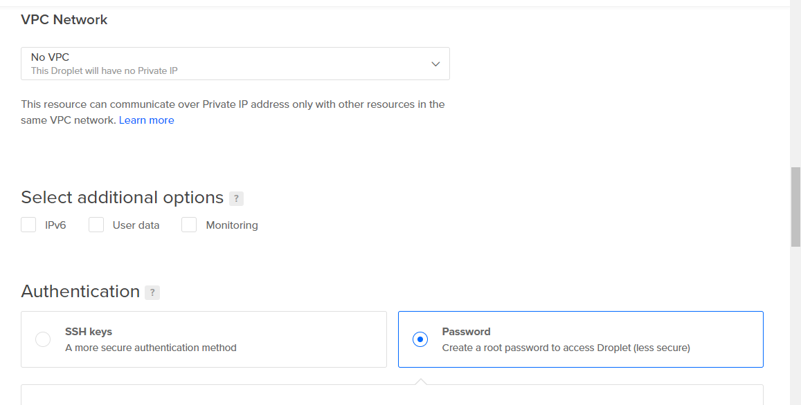
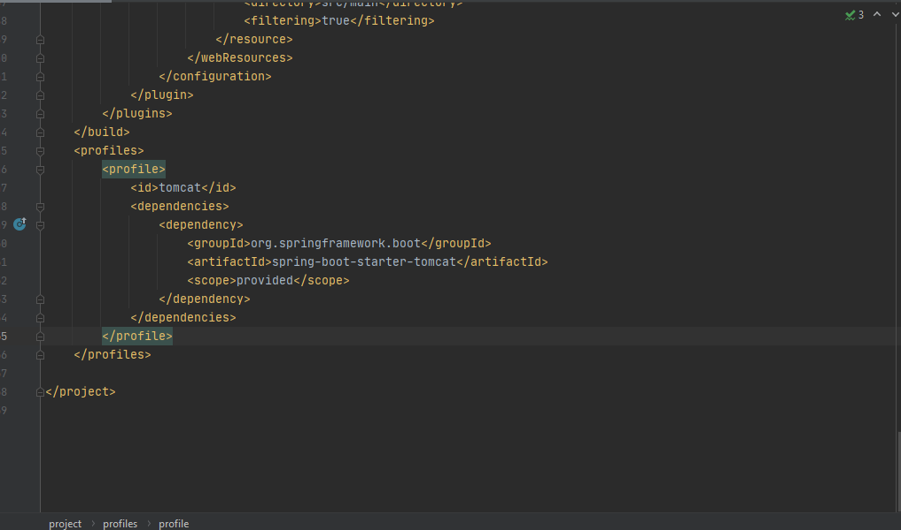
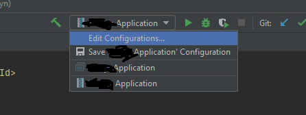
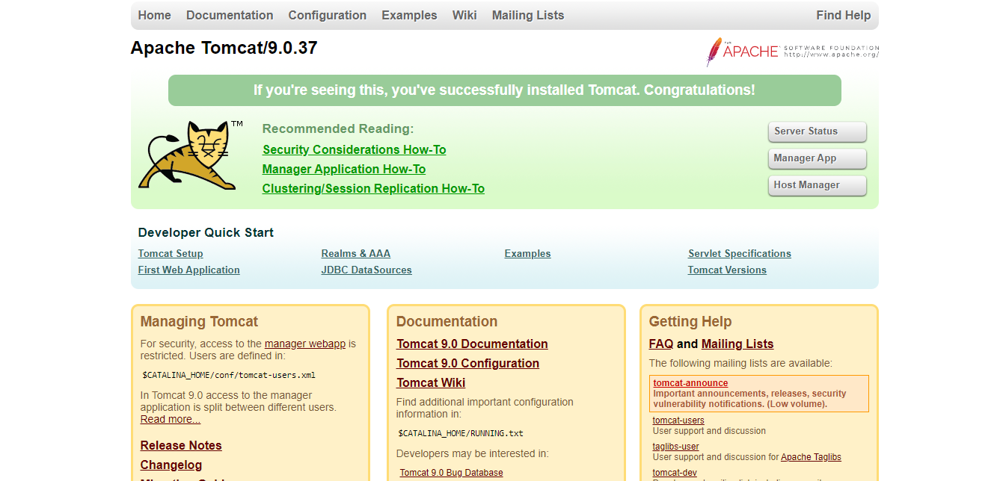

Introduction
Hi guys my name is Jamar P and I'm going to show you how to deploy a java spring boot war file to tomcat server. I will be using digital oceans for hosting as I find them as one of my favorites when it comes to the freedom they give you. Before I get started, I would like to give a shout out to BogoToBogo for an amazing article on deploying to tomcat, my blog is very similar, but this article goes in it a little more in depth, but I cover the digital oceans part as well which is just setting up the droplet. I will also cover installing postgresql on Ubuntu as well. Also check out an article about that here if you want. The actual deployment process part won't start until a few paragraphs down so grab some popcorn.
Part 1: Setting Up Digital Oceans Droplet
So once you have created a digital oceans account you should come to a screen that looks like this:
So from here you will want to keep the current version of Ubuntu selected. I'm going to do the basic plan for CPU of $5/month. They require you to pay $5 up front when signing up, but that goes towards your credit for later usage. You can choose any data center you want:
I also will not be adding volume storage for this demo. Next are the options for accessing your droplet. I will choose the password option because explaining ssh is not that hard, but it takes away from the point of this demo:
After that pick the name you want for your droplet, it should be unique, I did not check the add backups option, then click the create droplet button at the bottom and that's it!
Part 2: Accessing Your Droplet And Installing PostgreSQL
Now I want you to do a couple of things. First, download Putty which I will be using to access the droplet here . Putty is free and is used to access remote computers on Windows. Next, I want you to go to your Digital Ocean dashboard and copy the IP address associated with your droplet you just created. Now for the fun stuff!
In Putty I want you to go the the category that says SSH and click on it. In here, make sure the SSH protocol is on version 2. Now, click the Session category and put your droplet IP address in the "Host Name (or IP address)" text box. Make sure the port is 22 and the connection type is SSH. Now type a name in the "Saved Sessions" text box and press save to save your connection configuration so you won't have to do this again later. After that click open and we are ready to begin installing postgresql!
So after you enter your password that you made when creating your droplet, there are a few commands we need to call in order to set up postgresql. By the way, if they ask you for a username it should most likely be "root". First let's update the packages that are already installed on this linux droplet:
Next let's download two packages that are needed to use postgresql, by the way the word sudo is an abbreviation for super doer which is what the root user is meaning the user who has admin privileges. The sudo command allows us to run other commands with admin level privilege so that they are allowed:
It's done being installed! Next let's go into postgresql by doing the following:
From here you can create databases, tables and anything you would normally do with SQL databases. To exit postgresql just enter \q and press enter.
Now we need to download the jdbc postgresql driver and set it up with tomcat, but we will do that further down below once we set up tomcat.
Part 3: Installing Java
Ok so now we need to install java on to this droplet since we are hosting a java project. Let's start by doing the following which just installs the java jdk on to your droplet:
Once we do that we can run the following to check to see that it installed correctly:
Alright, so now let's set the JAVA_HOME environment variable so that other programs know where the java jdk is. First let's navigate to the /etc folder (by the way make sure you are in the root folder before doing this by doing either):
or
Once you are in the root folder let's navigate to the /etc folder:
Next let's use the nano text editor (nicely named) so that we can edit the variables in the path variables file.
It should look like the picture below, but without the JAVA_HOME part. Once you are in the nano text editor, hit enter to move down to a new line or hit the down arrow. Now let's add the following to set the JAVA_HOME environment class path variable. Depending on what version of java jdk you downloaded your path could be different, but it should look similar to the following:
Make sure the double quotes are included. Once you are done with that, hit Ctrl + O to write out the lines, then hit Ctrl + X and then enter to close the nano text editor.
Next let's set the new changes to the enviroment variable file by doing the following. If you are in the /etc folder then it will be this:
If you are in the root folder (just /) then it will be this:
Once that is done, let's check to make sure the JAVA_HOME variable is changed by doing the following:
We should get this or something like it:
Part 4: Configuring IntelliJ To Produce A .War File
Now I used IntelliJ for this demo so I will show you how to build a war file assuming that you have a spring boot application already. One difference between the jar and war files is that the war file does not need to be ran inside an embedded tomcat server. I will now show you the pom.xml file dependencies and changes for creating a .war file:
In the build xml tag most likely at the bottom of your pom.xml file should be where the plugin goes. This plugin is used to direct where the files are that need to be used to build a jar/war file:
The profile tag is used for when you want to add multiple servers. Another profile could be for the jetty server:
Next is the packaging tag which specifies that we want the war file instead of the default jar file. We also want the first two dependencies here we don't need to worry about the spring boot starter security for this one even though it is very important for enterprise level APIs:
The next picture is for some more dependencies that we need. We only need the postgresql one from here. I recommend flyway db as well for migrating the database schemas automatically when the spring application runs so that you don't have to manually create the tables when you migrate the code:
This last picture for the pom.xml is for the actuator dependency which is optional, but helps with things such as showing the health of the server by calling the endpoint "/health" and it does a few other things as well:
Now we need to use maven to do a packaging of our spring boot application. Let's go over to the maven window and double click the "package" option. Once it builds successfully there should be a .war file in your target folder:
Now you might notice that if you run the spring boot application the normal way again, you might get an error. In order to fix this we have to set up a new run configuration. First let's click the drop down arrow where it says your application name and select "Edit Configurations...":
Once we do that, we now need to click the plus button and create a new run configuration. Select the jar application option:
Now let's "Path to JAR" text box to the .war file that we just generated in the target folder from earlier. Also set the working directory to the root folder in your project. Set the JRE field to whatever JDK that you have installed and connected with IntelliJ. "Search sources using modules's classpath" should be set to whole project. Lastly, let's add a maven goal in the "Before launch" section at the bottom and put "clean install" and that's it! Now when you run your spring boot application it should run properly just like before.
Part 5: Installing Apache Tomcat
Now we need to install the apache tomcat server program to our droplet. So before we download apache tomcat, let's create a user group for the tomcat server:
Now let's create a tomcat user for this group. The /bin/false means that nobody can log into this account:
Next let's download the tar.gz file from the apache downloads page by googling "apache tomcat download" and right clicking the tar.gz link and copying it like below. Make sure you copy the link from the binary distributions category:

Next we need to run the following to actually pull the tar.gz on to our droplet:
Next let's move this file by first creating a new directory:
Next let's extract the file to this location:
Since we have already set the JAVA_HOME variable from before in the java installation, we only need to set the CATALINA_HOME variable which is what tomcat uses:
Once again like before, let's confirm the environment variable changes by running the following with the source being different this time:
To run tomcat use the following:
Then go to your droplet's IP address with colon 8080 at the end of it to see the tomcat page. This means that tomcat is installed correctly. If you are not seeing the screen below, then make sure that the CATALINA_HOME variable is set correctly (if using tomcat 9 then we need to put a .war file in the tomcat9/webapps directory before we can successfully visit the page below, so keep reading to the end and then do this):
Next let's navigate to the tomcat9 directory:
Next let's configure some permissions for this folder:
Next let's make the tomcat user the owner of the work, webapps, logs and temp directories:
Next is a startup script to let tomcat know to start every time the server is restarted. Since we are using digital ocean then we are not allowed to restart the server, but I will include this script anyways for those of you who are using your company's own servers. First make the directory /etc/init:
Then create the tomcat.conf file:
Now use the nano text editor to edit this file (assuming you navigated into the /init folder):
Now enter the following:
This next part should have an enter in between it and the rest of these lines should be indented over by about 4 spaces or so.
stop on runlevel [!2345]
respawn
respawn limit 10 5
setuid tomcat
setgid tomcat
#env JAVA_HOME=/usr/lib/jvm/java-7-openjdk-amd64/jre
env JAVA_HOME=/usr/lib/jvm/java-8-oracle/jre
env CATALINA_HOME=/var/lib/tomcat8
# Modify these options as needed
env JAVA_OPTS="-Djava.awt.headless=true -Djava.security.egd=file:/dev/./urandom"
env CATALINA_OPTS="-Xms512M -Xmx1024M -server -XX:+UseParallelGC"
exec $CATALINA_HOME/bin/catalina.sh run
# cleanup temp directory after stop
post-stop script
rm -rf $CATALINA_HOME/temp/*
end script
Next let's edit the tomcat users xml file and add our user that we made earlier:
In here let's add the following:
<role rolename="admin-gui"/>
<user username="admin" password="s3cret" roles="manager-gui,admin-gui"/>
Remember I said we still need to download the jdbc postgresql driver and set it up with tomcat? Let's go ahead and do that now. Google postgresql jdbc driver download and go to a page that should be similar to this and copy the link address the same way that we did before with tomcat:
Use wget and download it, I recommend downloading it in a /tempjar folder in your root directory:
After we do this, we need to copy this jar file to our $CATALINA_HOME/lib folder (/var/lib/tomcat9/lib). This way it can be recognized by the DBCP 2's Classloader as stated here in the postgresql section.
Now we to do some context configuration. Let's navigate to the context file.
Now there's two ways we can go about configuring our context.xml file. The first way is to make this data source available to multiple tomcat applications. The second way is to make it available to only the current tomcat application. For both ways replace the "myuser" and "mypasswd" with the credentials you use for the postgresql cli. Remember the default username for postgresql is just "postgres":
The first way (make data source available to multiple tomcat applications):
type="javax.sql.DataSource" driverClassName="org.postgresql.Driver"
url="jdbc:postgresql://127.0.0.1:5432/mydb"
username="myuser" password="mypasswd" maxTotal="20" maxIdle="10" maxWaitMillis="-1"/>
The second way (make data source available to current tomcat application):
type="javax.sql.DataSource" driverClassName="org.postgresql.Driver"
url="jdbc:postgresql://127.0.0.1:5432/mydb"
username="myuser" password="mypasswd" maxTotal="20" maxIdle="10" maxWaitMillis="-1"/>
Now let's save the changes and exit out of the nano text editor:
then
and
Once that's done, we need to edit our web.xml file. While we're still in our /conf directory let's open the nano text editor for the web.xml file here:
Enter the following in there. The description can be changed to whatever you want:
<description>postgreSQL Datasource example</description>
<res-ref-name>jdbc/postgres</res-ref-name>
<res-type>javax.sql.DataSource</res-type>
<res-auth>Container</res-auth>
</resource-ref>
Make sure to append "java:/comp/env" to your jdbc url in your application.properties, application.yml or wherever you have your jdbc url in your application when deploying to tomcat.
Part 6: Pulling Spring Boot Application From Github And Deploying
I used github for this demo so I used the command git clone to pull the entire project to the droplet. Before I did this I just made a folder called /api in the root directory:
I navigated into this folder:
Then I git cloned the repository:
Now let's navigate into the folder that was created first by listing the directories inside the /api folder to find it and navigating into it:
Once we are in there, we need to run mvn clean install. Before we do that, we need to download maven on to this droplet:
We can check that maven is installed properly by calling the following:
Now (assuming you are in your project's name directory that you pulled from github) let's run mvn clean install build the .war file.
Now let's finally put our .war file in the webapps directory of tomcat so it can be served (Call sudo $CATALINA_HOME/bin/startup.sh to restart the tomcat server to see the changes you have made).
That's it! We have deployed our java spring boot application to the cloud as a .war file... bon apetit!